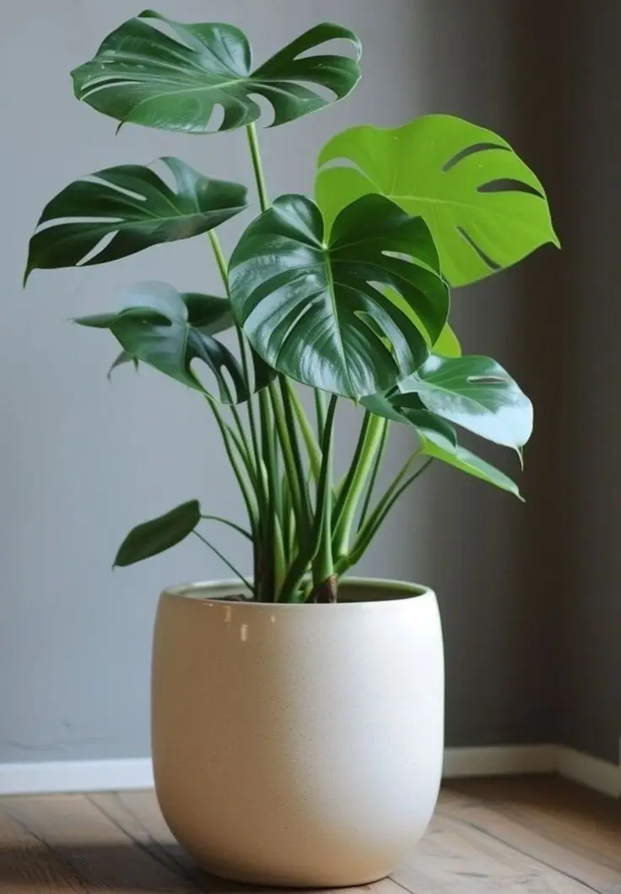

Монстера

Опис
Монстера – велика тропічна рослина з гарним розрізним листям. У природі вона росте в тропічних лісах і чіпляється за дерева повітряними коренями, тому в кімнаті їй потрібна опора.
Рослину потрібно розміщувати у світлому місці без тривалого впливу прямих сонячних променів. Поливати її слід після підсихання верхнього шару ґрунту, а листя бажано періодично протирати від пилу.
Для підживлення в період росту підійдуть комплексні добрива для декоративно-листяних рослин. Монстера небезпечна для домашніх тварин, тому її краще ставити поза їхнім доступом. Рівень вологості повітря в кімнаті має становити близько 60 %.
Характеристики
- Категорія
- Тропічні декоративно-листяні
- Максимальна висота
- до 3 метрів
- Дата придбання
- Безпечна для тварин
- ні
Догляд за сезонами
| Сезон | Частота поливу | Освітлення |
|---|---|---|
| Весна | раз на 7 днів | яскраве розсіяне світло |
| Літо | кожні 5–7 днів | розсіяне світло, захист від прямого сонця |
| Осінь | раз на 8–10 днів | розсіяне світло |
| Зима | раз на 10–14 днів | найсвітліше місце в кімнаті |